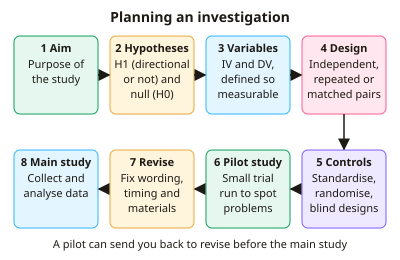

A-level Psychology Year 13 · Topic 10
Psychological skills
Psychological skills bring together everything about doing and judging research, ready for the synoptic exam papers.
We will cover planning investigations, sampling, reliability and validity, ethics, qualitative analysis and descriptive statistics.
Then we practise maths skills, carrying out and writing up a study, and evaluating unseen research and extended essays.
- 8 subtopics
- 390 questions
- Free: 10.1 notes and 10 questions
In this topic
- 10.1Planning and designing investigations: aims, hypotheses, variables, designs, controls and pilot studiesFree below · 35 questions
- 10.2Sampling, reliability, validity and generalisabilityOpen in Full Marks · 32 questions
- 10.3Ethics: BPS code of conduct, practical issues and socially sensitive researchOpen in Full Marks · 27 questions
- 10.4Qualitative data and analysis: thematic analysis, content analysis and case studiesOpen in Full Marks · 74 questions
- 10.5Descriptive statistics and data presentation: central tendency, dispersion, graphs and distributionsOpen in Full Marks · 66 questions
- 10.6Maths skills for psychology: ratios, percentages, decimals, standard form, significant figures and estimationOpen in Full Marks · 64 questions
- 10.7Conducting a practical investigation: data collection, analysis and report writingOpen in Full Marks · 67 questions
- 10.8Evaluating and applying research: peer review, evaluating unseen studies and synoptic extended writingOpen in Full Marks · 25 questions
10.1 · Free notes
Planning and designing investigations: aims, hypotheses, variables, designs, controls and pilot studies

Key points
- An aim is a general statement of what the researcher intends to investigate and why. A hypothesis is a precise, testable prediction written in operationalised terms.
- A directional (one-tailed) hypothesis predicts the direction of the difference or correlation, and is used when earlier research or theory supports it. A non-directional (two-tailed) hypothesis predicts a difference or relationship without stating the direction.
- The null hypothesis states that there is no significant difference or relationship, and that any observed pattern is due to chance. It is retained or rejected after a statistical test.
- The independent variable (IV) is manipulated by the researcher. The dependent variable (DV) is measured. Operationalise both, for example 'recall = number of words correct out of 20 in 2 minutes'.
- Extraneous variables (e.g. noise, participant mood) may affect the DV but do not vary systematically with the IV. Confounding variables vary systematically with the IV, so the cause of any change in the DV cannot be identified.
- Independent groups uses different participants in each condition. It has no order effects, but participant variables can differ between groups, which is controlled by random allocation.
- Repeated measures uses the same participants in every condition. It controls participant variables but creates order effects (practice, fatigue) and demand characteristics. Matched pairs pairs participants on a relevant variable, and then one of each pair goes to each condition. It is time-consuming and matching is never perfect.
- Counterbalancing (ABBA) means half the participants do A then B and half do B then A, which spreads order effects evenly. With k conditions, complete counterbalancing needs k! orders (3 conditions = 6 orders).
- Key controls are standardised procedures and instructions, controlling situational variables (temperature, noise, time of day), and random allocation. A single-blind design hides the condition from participants, and a double-blind design hides it from the researcher too, reducing demand characteristics and investigator effects.
- Laboratory experiments have high control but low ecological validity. Field experiments manipulate the IV in a natural setting, so they have higher ecological validity but less control. Natural/quasi experiments use an IV that is not manipulated by the researcher, and random allocation is not possible, so causal claims are weaker.
- A pilot study is a small-scale trial of the procedure before the main study. It checks instructions, timing, materials, operationalisation and observational categories, and can reveal ceiling or floor effects. This saves time and money and lets the design be refined.
- Exam tip: when asked to design a study, state the design, give the operationalised IV and DV, name one control and justify it, and say what a pilot would check.
In more detail
- Worked design: 'Does background music affect revision?' → IV: music vs silence; DV: words recalled out of 20 after 10 minutes; design: independent groups, so the same word list can be used without practice effects; controls: same room, time of day, list and instructions.
- Choosing direction: use a directional hypothesis if past research (e.g. Grant et al.) suggests which way the result will go; otherwise use a non-directional one.
- Worked matched pairs: pair participants on a memory pre-test (e.g. both scored 14 out of 20), then randomly allocate one of each pair to each condition.
- Exam tip: every design choice needs a reason linked to the scenario, e.g. 'repeated measures, because memory varies a lot between people'.
Practice
Planning and designing investigations: aims, hypotheses, variables, designs, controls and pilot studies: 10 questions
Pick an answer to check it, or open the answer for the explanation.
1. A researcher predicts that caffeine will affect reaction time but does not state the direction. Which type of hypothesis is this?
- Non-directional (two-tailed)
- Operational hypothesis
- Null hypothesis
- Directional (one-tailed)
Show answer
A: Non-directional (two-tailed). It predicts a difference without saying which way, so it is a non-directional (two-tailed) alternative hypothesis. A null hypothesis would predict no effect at all.
2. Which is the best operationalisation of the DV 'aggression' in a playground observation of 6-year-olds?
- Whether the teacher thinks the child is naughty
- How aggressive each child seems
- The child's mood at the start of play
- The number of hits, kicks and shoves in a 10-minute observation
Show answer
D: The number of hits, kicks and shoves in a 10-minute observation. Operationalisation makes a variable measurable and objective. A count of defined behaviours in a set time can be recorded reliably, unlike impressions or opinions.
3. A repeated measures study has everyone do task A then B in one half of the sample, and B then A in the other half. Why?
- To increase the sample size
- To control order effects such as practice and fatigue
- To remove all participant variables
- To prevent investigator effects
Show answer
B: To control order effects such as practice and fatigue. This is counterbalancing. It spreads order effects (practice, boredom, fatigue) equally across conditions rather than removing them.
4. Which problem is most likely to threaten an independent groups design?
- Participant variables differing between the groups
- Participants guessing the aim from both conditions
- Order effects such as practice
- Needing to match participants on IQ
Show answer
A: Participant variables differing between the groups. Different people are in each condition, so individual differences (ability, motivation) may differ between groups and confound results. Random allocation reduces this.
5. Which is a limitation of a matched pairs design?
- It needs fewer participants than repeated measures
- Participants see both conditions and guess the aim
- Matching is time-consuming and cannot cover every relevant variable
- Order effects such as fatigue
Show answer
C: Matching is time-consuming and cannot cover every relevant variable. Pre-testing and pairing is slow, and unmatched variables remain. Each person does one condition only, so order effects do not arise, and twice as many participants are needed.
6. A pilot study of a memory test shows almost every participant scoring full marks. What should the researcher do before the main study?
- Change the hypothesis to non-directional
- Collect a larger sample and change nothing else
- Make the test harder to avoid a ceiling effect
- Delete the pilot data and continue unchanged
Show answer
C: Make the test harder to avoid a ceiling effect. Near-full marks is a ceiling effect, so the test cannot show differences between conditions. A pilot exists to find and fix such problems before the main study.
7. In a study of music and exam performance, the music group was tested in the morning and the silent group in the afternoon. Time of day is a:
- Dependent variable
- Independent variable
- Random variable
- Confounding variable
Show answer
D: Confounding variable. Time of day varies systematically with the IV (music vs silence), so any difference in scores could be due to it. That makes it a confounding variable.
8. Which statement about random allocation is correct?
- It assigns participants to conditions by chance in an independent groups design
- It guarantees a representative sample
- It selects the sample from the target population by chance
- It controls order effects in repeated measures
Show answer
A: It assigns participants to conditions by chance in an independent groups design. Random allocation puts participants into conditions by chance, spreading participant variables. Choosing a sample by chance is random sampling, and order effects need counterbalancing.
9. A repeated measures experiment has 3 conditions. How many different orders are needed for complete counterbalancing?
- 6
- 9
- 3
- 12
Show answer
A: 6. The number of orders is 3! = 3 × 2 × 1 = 6 (ABC, ACB, BAC, BCA, CAB, CBA), each used equally often.
10. A researcher varies the number of bystanders in a real shopping centre while shoppers are unaware of the study. What type of experiment is this?
- Laboratory experiment
- Natural experiment
- Field experiment
- Quasi-experiment
Show answer
C: Field experiment. The researcher manipulates the IV in a real-world setting, which defines a field experiment. In natural and quasi experiments the IV is not manipulated by the researcher.
Keep going in Full Marks
Full Marks has 35 questions on Planning and designing investigations: aims, hypotheses, variables, designs, controls and pilot studies (25 more than here), set out in practice levels. You also get notes and 3D models for all 8 subtopics of Psychological skills, plus games, timed exams and past papers.
On your exam board
- AQATopic 11: Research methods: inferential statistics
- OCRTopic 6: Research methods and skills
- EdexcelTopic 7.1: Psychological skills: methods and data
Not in the Cambridge specification.